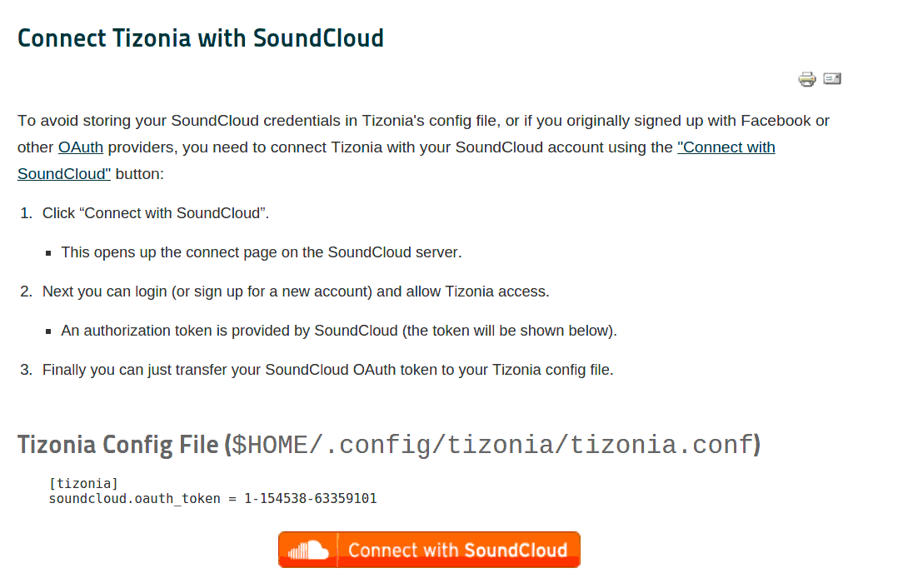

SoundCloud¶
To stream from SoundCloud Tizonia needs to be authorized to access your
SoundCloud account. For that you need to obtain your OAuth token provided by SoundCloud and put it into your
tizonia.conf file. For more details please read about the Connect with
SoundCloud feature.
Please go to Aratelia’s Website 1 to retrieve your SoundCloud OAuth token.
CONFIGURATION¶
The Tizonia configuration file contains a block under the [tizonia] section
like the one pictured below (see also Configuration File).
Warning
When credentials are stored in your local
tizonia.conf, please ensure that this file has the correct
file system permissions to prevent other users from accessing your
credentials.
E.g.: $ chmod og-rwx $HOME/.config/tizonia/tizonia.conf
# SoundCloud configuration
# -------------------------------------------------------------------------
# To avoid passing this information on the command line, uncomment and
# configure your SoundCloud OAuth token here.
#
# To obtain your OAuth token, Tizonia needs to be granted access to your
# SoundCloud account. Visit https://tizonia.org/docs/soundcloud/ for the
# details.
#
# soundcloud.oauth_token = X-XXXXXX-XXXXXXXX-XXXXXXXXXXXXXX
# soundcloud.buffer_seconds = size of the audio buffer (in seconds) to use
# while downloading streams. Default: 600.
# Increase in case of cuts.
soundcloud.buffer_secondsThis is the minimum size of the audio buffer (in seconds) that Tizonia will use while downloading the audio streams. It may be increased in case of cuts, but usually not required. Default: 600.
OPTIONS¶
--soundcloud-oauth-token argSoundCloud user OAuth token (not required if provided via config file).
--soundcloud-user-streamPlay the tracks currently listed in the user’s stream.
--soundcloud-user-likesPlay the tracks liked by the user.
--soundcloud-user-playlist argPlay a playlist from the user’s collection.
--soundcloud-creator argSearch and play the top 50 tracks from a creator.
--soundcloud-tracks argSearch and play tracks by title (50 first matches only).
--soundcloud-playlists argSearch and play playlists by title.
--soundcloud-genres argSearch and play genres top tracks (arg is a command-separated list).
--soundcloud-tags argSearch and play tags top tracks (arg is a command-separated list).